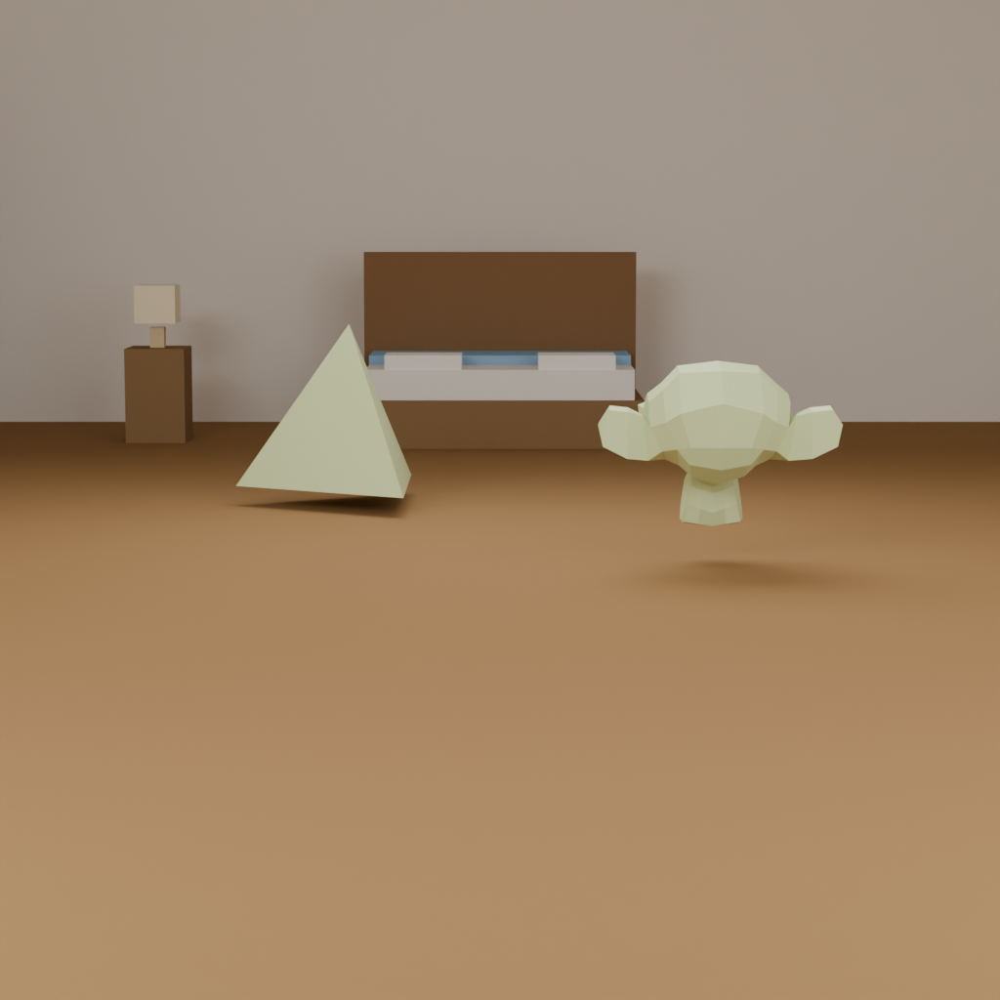
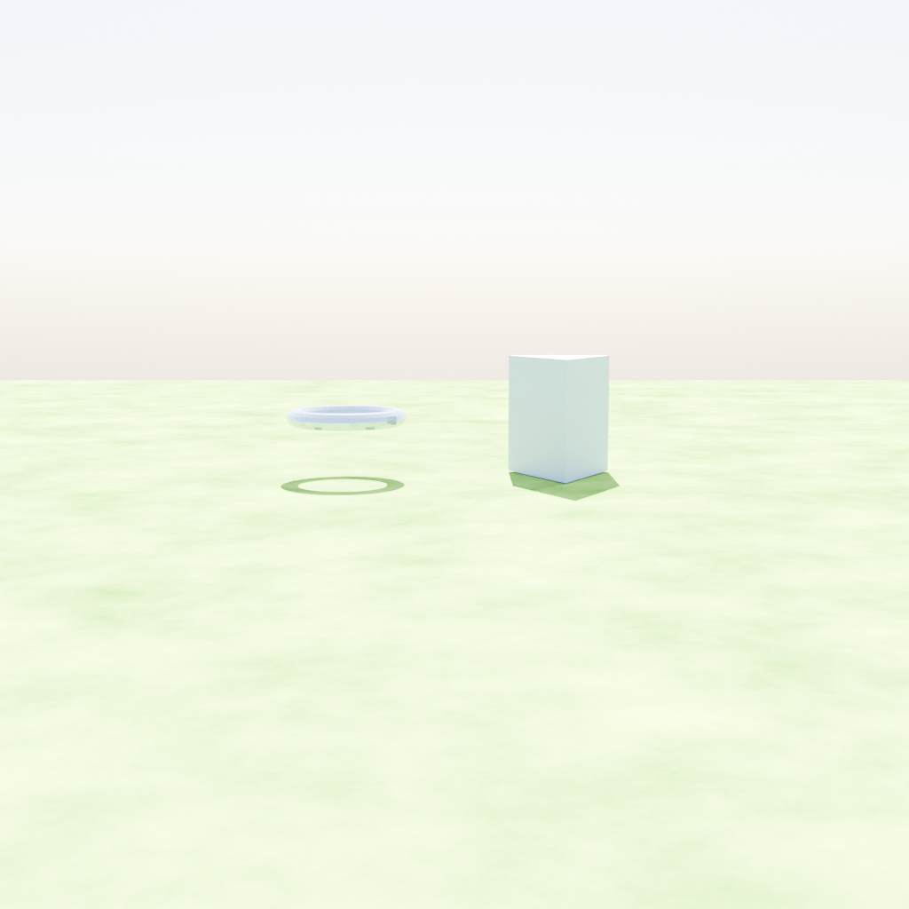
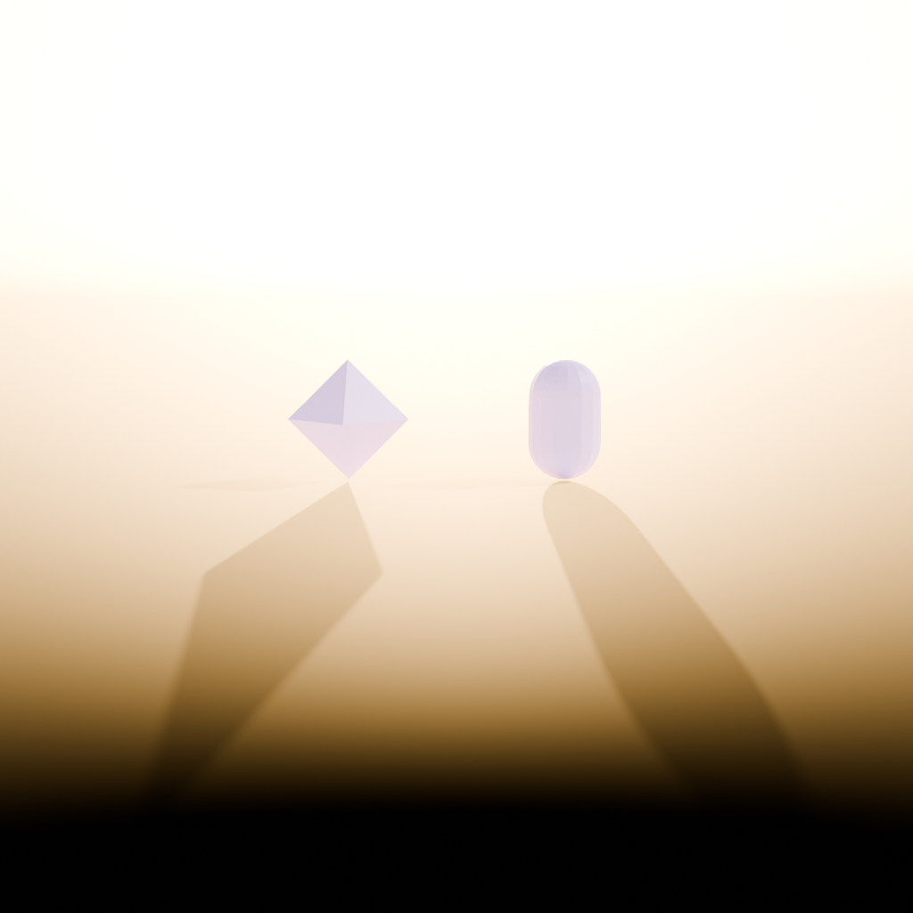
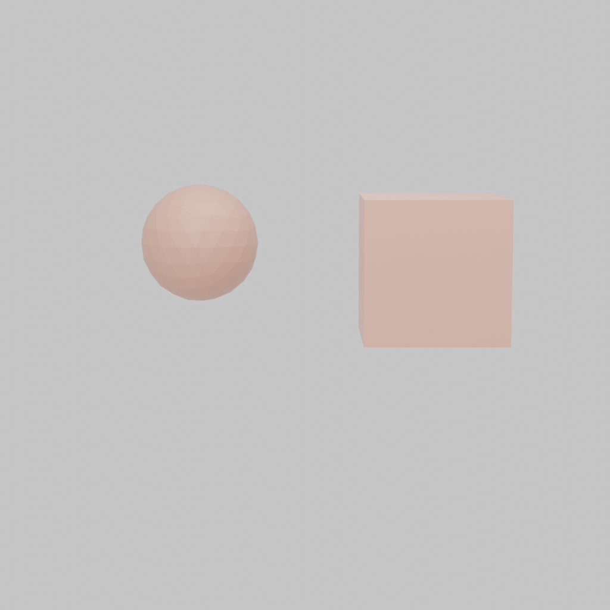
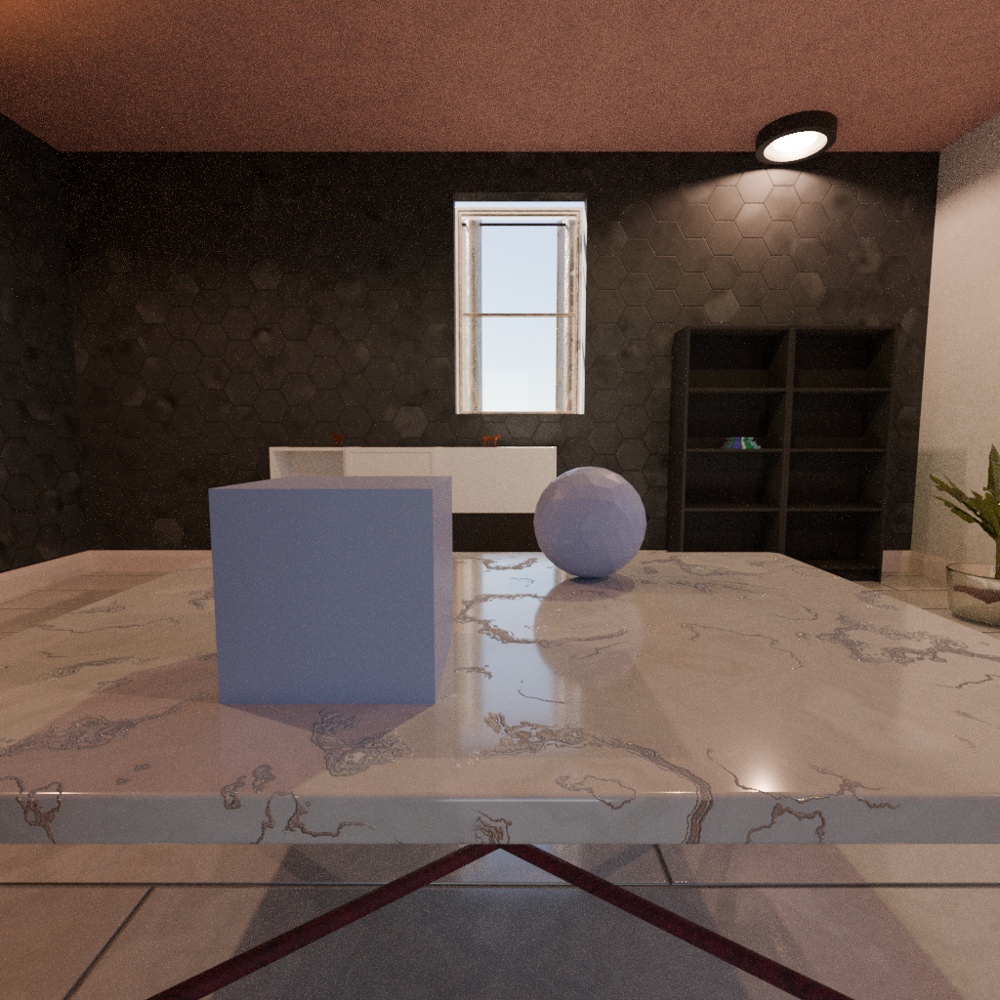

Summary
GRAFIQ (Graphic Intelligence Quotient) is a synthetic benchmark that probes whether vision–language models (VLMs) reason about the graphics factors behind an image—geometry, materials, and lighting—rather than only its semantics. Each item is a pairwise forced–choice question grounded in the render passes that produced the image, so the gold label is guaranteed to be supported by the pixels the model actually sees.
Since the proposal we have built and validated the full pipeline:
-
A deterministic, two–stage Blender + Python pipeline: Stage 1 renders an RGB image plus the task–specific pass (depth, glossy–direct, surface–normal, or diffuse–direct); Stage 2 verifies the label against per–object statistics under Blender’s
IndexOBmask and discards any item whose pass–derived answer disagrees with the scene metadata. - Four tasks implemented across three image–formation axes: depth comparison, roughness comparison, surface–normal orientation, and light–direction reasoning, each with three natural–language question variants for phrasing robustness.
- Three scene tiers that factor scene complexity along two independent axes: Tier 1 (twenty procedural primitive assets × twelve controlled indoor/outdoor backgrounds), Tier 2 (Objaverse foreground assets), and Tier 3 (the same primitives re–rendered inside procedural Infinigen indoor scenes).
- A pixel–centroid Left/Right labelling rule that anchors both the question wording and the gold answer to the viewer’s perspective on the rendered frame, fixing a silent world–vs.–camera axis bug that previously pushed Qwen2.5–VL below chance.
- An evaluation harness built on vLLM that runs any VLM as a greedy forced–choice classifier and reports per–task and per–background accuracy with 95% bootstrap CIs and positional–bias diagnostics.




Preliminary Results
The reference batch in examples/showcase/ is a Tier 1 split with 480 renders (10 primitive object pairs × 4 tasks × 12 backgrounds) that yield 276 pixel–verified QA items. We evaluate Qwen2.5–VL–7B–Instruct on this split as a first open–weight baseline; decoding is greedy, all 276 responses parse cleanly, and each number below is reported with a 95% bootstrap CI (10,000 resamples).
| Task | n | Accuracy | CI95 | p vs. chance |
|---|---|---|---|---|
| roughness_comparison | 34 | 79.4% | [64.7, 91.2] | 6.0×10−4 |
| depth_comparison | 120 | 62.5% | [54.2, 70.8] | 6.2×10−3 |
| light_direction | 72 | 48.6% | [37.5, 59.7] | 0.81 |
| normal_orientation | 50 | 38.0% | [24.0, 52.0] | 0.090 |
| Overall | 276 | 56.5% | [50.7, 62.3] | 0.030 |
Table 1: Qwen2.5–VL–7B–Instruct on the 276–item Tier 1 showcase split. Rows whose CI excludes 50% are statistically distinguishable from chance at α=0.05.
Three findings stand out. (i) Above chance overall (56.5%, p=0.030), so the benchmark is non–trivial but not saturated. (ii) Clear task ordering: metric–comparison axes (roughness, depth) are significantly easier than axes that require inverting shading cues into an implicit 3D frame (normal, light), matching our RQ2 hypothesis. (iii) Small background effect: accuracy barely moves across the three background groups (Table 2), with heavily overlapping CIs — we therefore read this as “no large main effect at this scale” and defer the definitive RQ3 comparison to the Tier 3 split.
| Background group | n | Accuracy | CI95 |
|---|---|---|---|
| Studio (plain / studio / room / gradient) | 91 | 52.7% | [42.9, 62.6] |
| Furnished indoor (bedroom / kitchen / living_room / office) | 88 | 56.8% | [46.6, 67.0] |
| Outdoor (outdoor / desert / snow / concrete) | 97 | 59.8% | [49.5, 69.1] |
Table 2: Qwen2.5–VL–7B–Instruct accuracy grouped by background style, with 95% bootstrap CIs. Point estimates rise slightly with background realism, but all three CIs overlap and the gap is well within bootstrap noise.
A positional–bias analysis exposed the dominant error mode: Qwen picks “Left” 73.2% of the time despite a 44.9% Left gold rate, and 82% of its errors are (gold=Right, pred=Left). Figure 2 shows three representative failures where the pass–level evidence clearly supports “Right” but the model answers “Left”.


Progress vs. Plan
Against the four–week schedule in our proposal, we are on track: the Design & Setup and Core Build & Milestone weeks are complete, and we have entered the Stretch Goals phase. Concretely, the pipeline, four–task QA generator, and evaluation harness that we promised as core deliverables all exist end–to–end and are reproducible from a single seed.



Updated Work Plan
Work remaining for the final deliverable falls into four buckets:
Dataset scale & tier sweep
Scale each tier to a few–thousand pixel–verified items and produce matched Tier 1/2/3 splits so that the Tier 1 baseline table can be re–run unchanged against the Objaverse (Tier 2) and Infinigen (Tier 3) splits. This is the comparison that actually answers RQ3 (background realism). Infrastructure is in place; remaining work is batch rendering and curation.
Fifth axis: viewing & correspondence
Reuse the existing scene constructor with two cameras and ask either “do these images show the same scene?” or “which object in image B corresponds to object X in image A?”. The IndexOB pass gives per–object correspondence for free, so no new rendering infrastructure is required.
Broader VLM evaluation
The remaining evaluation work breaks into three steps:
- Extend the harness to frontier closed–weight VLMs — OpenAI’s GPT–5 family, Google’s Gemini 3, and Anthropic’s Claude 4.5 / Opus — through their OpenAI– and Anthropic–compatible chat APIs, and add at least one stronger open–weight baseline (Qwen2.5–VL–72B, InternVL–2.5), so the leaderboard spans both a small–open and a large–closed tier.
- Re–run all models on the full–scale benchmark once the Tier 1–3 splits have been scaled up.
- Collect a small human baseline (authors + volunteers) as a reference ceiling, if time allows.
Risks
The main open risk is that some tasks become trivially solvable, e.g. near/far depth with strong perspective, in which case we will harden them by narrowing the gap between the two objects’ ground–truth values, following BLINK’s recipe of filtering items with very large “signal gaps”.
Scale Tier 1/2/3 splits; implement viewing & correspondence task; stand up closed–weight evaluation endpoints.
Re–run all models on the full–scale benchmark; failure analysis and category–level breakdowns; final report, video, slides, and rehearsal.
Final Presentation